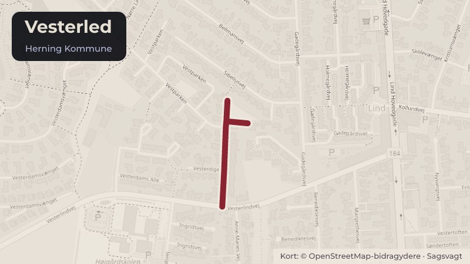

Behandlet 2. november, Økonomi-, Erhvervs- og Uddannelsesudvalget, Herning
Godkendelse af anlægsregnskab vedr. sprinkling af plejecentre
Der anmodes om godkendelse af anlægsregnskaber for etablering af sprinkling på Vesterled Plejecenter, Herning. Forvaltningen anbefaler, at anlægsregnskaberne godkendes.
Steder i sagen: Vesterled

Kort fortalt
- Hvem
- Økonomi-, Erhvervs- og Uddannelsesudvalget, Herning Kommune
- Hvornår
- Mandag 2. november 2026
- Status
- Behandlet. Referatet med beslutningen er ikke offentliggjort endnu.
Læs hele sagen Kommunens egen tekst
Sagsfremstilling
På byrådsmødet den 5. april 2022, punkt 80, blev der givet anlægsbevilling til sprinkling af den
eksisterende del af Vesterled Plejecenter på i alt 5.687.000 kr., fordelt med henholdsvis
752.000 kr. ekskl. moms på servicearealer samt 4.935.000 kr. inkl. moms på boligarealer på
Serviceområde 03 Kommunale Ejendomme.
Vesterled Plejecenter er beliggende på Vestergade i Herning.
Vesterled Plejecenter skulle i 2022 udvides med 16 boliger, fælles opholdsarealer,
personalefaciliteter samt flere parkeringspladser. Udvidelsen omfattede i alt 1.500 m². For
Vesterled Plejecenter var det vigtigt, at følgende værdier gjorde sig gældende:
De nye boliger skulle fordeles lige på hver etage og tæt på eksisterende for at opnå
fællesskab i afdeling.
Placeringen skulle i størst mulig omfang planlægges, således at der ikke var brug for
ombygning af det eksisterende og genhusning i perioden.
Der skulle ikke ombygges eller bygges unødige kvadratmeter.
I forbindelse med udvidelsen af Vesterled Plejecenter skulle hele centret sprinkles for at få
ibrugtagningstilladelse. Sprinkling giver en ekstra sikkerhed for beboere og medarbejdere i
tilfælde af brand, når der blandt andet er tale om byggeri i flere etager.
Økonomi
Anlægsregnskaber:
Bevillingsprogram Anlægsprojekt
U/I
Bevilling/kr.
Forbrug/kr.
Forskel/kr.
Sprinkling på
eksisterende
plejecentre
(servicedel) ekskl.
moms
U
Sprinkling på
eksisterende
plejecentre
(boligdel) inkl.
moms
U
N
Låneoptagelse
KommuneKredit
Udgifterne til sprinkling af boligdelen udgør 4.352.710 kr. Udgiften finansieres ved
optagelse af et 30-årigt fastforrentet lån i KommuneKredit. Der er modtaget dispensation
fra Økonomi- og Indenrigsministeriet til låneoptagelse i 2026 i forbindelse med
aflæggelse af anlægsregnskabet for projektet i stedet for løbende i projektperioden.
Dispensationen er vedlagt som bilag.
På investeringsoversigten blev der oprindeligt afsat rådighedsbeløb samt tilhørende
låneoptagelse til sprinkling af plejecentrene Vesterled, Rosenlund i Snejbjerg, Kildehøj i
Vildbjerg og Toftebo i Hammerum. Efterfølgende dialog med både bygningsmyndigheden
og brandmyndigheden viste, at plejecenter Kildehøj også efter ombygningen levede op til
kravene i Bygningsreglementet. Plejecentret er i et plan og opfylder sammen med den
øvrige brandsektionering kravene, hvorfor der ikke blev etableret sprinkling. Revisionen
af plejeboligplanen, herunder blandt andet etablering af det nye Munkgård Plejecenter i
Snejbjerg, betød desuden, at udvidelsesplanerne for Rosenlund og Toftebo ikke blev
aktuelle. Restrådighedsbeløb samt restbudget til låneoptagelse indgår i
regnskabsaflæggelsen for 2026.
Renter og afdrag på låneoptagelsen for sprinkling på Vesterled Plejecenter finansieres af
beboerne via huslejebetaling, som tilgår Serviceområde 18 Sundhed og Ældre. Sprinkling
vil medføre en huslejestigning i gennemsnit på 186 kr. pr. måned, svarende 2,6 %.
Indstilling
MILJØ-, INFRASTRUKTUR- OG NATURUDVALGET INDSTILLER,
at anlægsregnskabet for Vesterled Plejecenter, etablering af sprinkling, serviceareal,
godkendes
at anlægsregnskabet for Vesterled Plejecenter, etablering af sprinkling, boligdel,
godkendes
at der optages et endeligt lån på 4.352.710 kr. ved KommuneKredit til finansiering af
boligdelen
at huslejestigningen på 2,6 % tages til efterretning.
Kilde: Herning Kommune, Økonomi-, Erhvervs- og Uddannelsesudvalget, dagsorden fra mødet mandag 2. november 2026, punkt 22. Læs den originale sag hos kommunen.